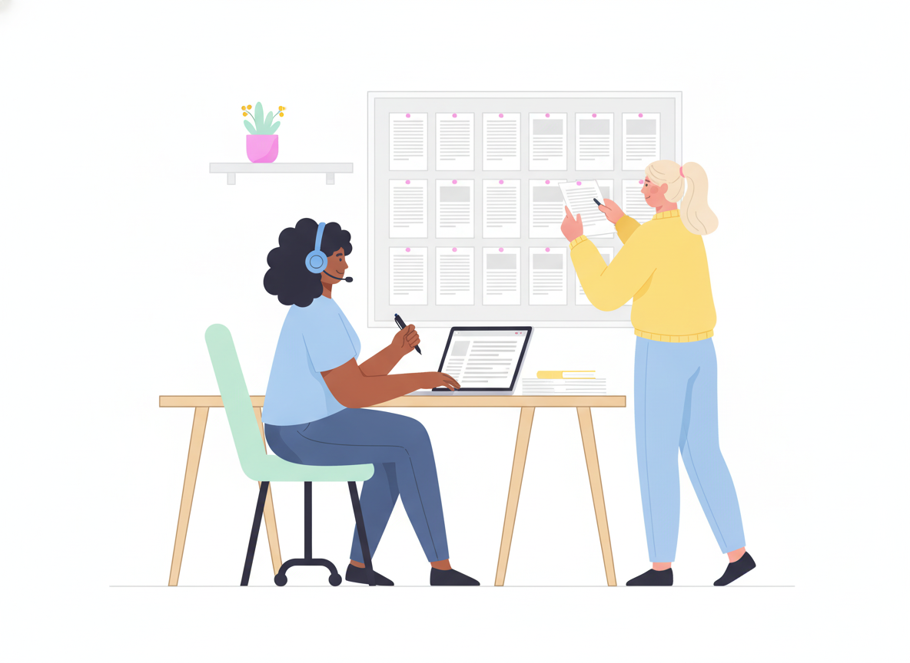

Knowledge-Centered Service: Turn Every Support Ticket Into a Help Center Article

Your support team answers the same questions every day. The answers live in ticket threads, chat logs, and a few experts' heads. Knowledge-centered service (KCS) is a way to get those answers into your help center while the work happens, instead of weeks later.
Customers notice. In a Gartner survey reported by CX Dive, customers said only 14% of their service issues were fully resolved in self-service. The most common failure was not finding content relevant to their issue, which came up in more than 43% of cases.
KCS was built to close that gap. This guide explains how it works, what a KCS article looks like, and how to start without a big rollout.
What is Knowledge-Centered Service (KCS)?
Knowledge-Centered Service (KCS) is a method for capturing, reusing, and improving knowledge as part of everyday support work. Instead of writing documentation after the fact, agents create and update help articles while they solve real customer issues. The knowledge base grows from actual demand.
KCS is maintained by the Consortium for Service Innovation, a nonprofit alliance of service and support organizations. It started life as knowledge-centered support. The name changed to service in version 6 to show that the method works beyond support teams. You'll see both names in searches, and both refer to the same KCS methodology.
Why help centers fall behind without KCS
Most help centers are built in a separate step. Support solves the problem. Later, a writer or subject matter expert turns it into an article. That delay costs you two things.
Context. The KCS Practices Guide puts it simply: once we know the answer, it's hard to ask the question the way someone who doesn't know it would. Articles written after the fact use the company's words, not the customer's. That's a big reason customers search and come up empty.
Coverage. A separate writing step can't keep up with the volume of new questions. The guide reports that members find 65% to 90% of incidents are repeats of issues already seen. If those answers aren't captured, your team keeps solving the same problems from scratch.
The KCS methodology: two loops
KCS runs on what the Consortium calls the Double Loop Process.
- The Solve Loop is the day-to-day work. An agent handles a request and, in the same flow, reuses, improves, or creates an article.
- The Evolve Loop is the step-back work. Leaders and knowledge experts look at patterns across many Solve Loop interactions and improve the content, the process, and the product.
The two loops feed each other. The Evolve Loop sets the standards the Solve Loop follows. The Solve Loop provides the real-world evidence the Evolve Loop needs to improve.
The KCS Solve Loop in practice
The Solve Loop has four practices: Capture, Structure, Reuse, and Improve. Here's what each looks like on a normal support shift.
1. Capture knowledge in the moment
Start the article while the conversation is happening, not after the ticket closes. Write down the issue in the customer's own words, even if their wording is vague. That wording is exactly what the next customer will type into your help center search.
The guide is blunt about this: if articles are only created after the request is resolved, vital information is already lost.
2. Structure it with a simple template
KCS recommends one simple template to start. The core fields are:
- Issue: the situation in the requestor's words. What are they trying to do, or what isn't working?
- Environment: what stays true before and after the fix, such as product, plan, version, or platform. Rich environment details are what separate one article from a similar-looking one with a different answer.
- Resolution: the answer to the question, or the steps to fix the issue.
- Cause: the underlying reason. This is optional and mostly useful for complex problems.
- Metadata: audience, confidence, and modification history.
Here's how a short article might look:
Issue: "I can't find last year's invoices."
Environment: Billing settings, admin role, account older than 12 months.
Resolution: 1. Go to Settings > Billing. 2. Open the History tab. 3. Change the date filter to "All time."
Cause: The invoice list shows the last 12 months by default.
KCS also encourages "complete thoughts, not complete sentences." A help article doesn't need polished prose to be useful. It needs to be clear and accurate.
3. Reuse: search early, search often
Before creating anything, the agent searches the knowledge base, and keeps searching as they learn more. They search one last time before saving a new article to avoid duplicates.
There's a bonus. According to the guide, the words agents and customers search with are potential content for improving an article. When a search fails, the search terms tell you how people actually describe the problem.
4. Improve: reuse is review
In KCS, every time someone uses an article, they also review it. The rule is "flag it or fix it." If you're confident and have permission, fix the article. If not, flag it so a subject matter expert can take a look.
This replaces the idea of reviewing every article before it goes live. Most articles are rarely reused, while a small share does most of the work. Reviewing on reuse puts your effort into the content customers actually need.
The KCS Evolve Loop: keeping the knowledge base healthy
The Solve Loop creates and improves content. The Evolve Loop keeps the whole system healthy through four practices:
- Content health: set a simple content standard, merge duplicates, archive outdated articles, and write new articles where patterns show a gap.
- Process integration: make knowledge work part of the normal support workflow and tools, not a separate task.
- Performance assessment: track how the knowledge base and the people working in it are doing over time.
- Leadership and communication: explain why KCS matters and keep people motivated to do it well.
Contact center knowledge management often fails because it's treated as a side project. The Evolve Loop makes it part of how the team runs, much like a lightweight documentation governance framework.
Getting KCS articles into your help center
KCS treats self-service as a way to engage customers, not a way to avoid them. That's the same shift we describe in moving from deflection to real resolution. The guidance is practical:
- Publish fast. The Consortium describes a "90/0 rule": aim to make 90% of what you know available to customers at or before the time a case closes.
- Leave no dead ends. The guide calls this the number one factor in whether users will use self-service again. Every article should point to a next step, including how to reach a person.
- Promote it. "Build it and they will come" doesn't work for self-service.
That last point matters more than most teams expect. In a separate Gartner survey reported by CX Dive, 3 in 5 customers said the agent didn't mention self-service options during their recent interaction. Customers whose agent did recommend self-service were about twice as likely to use it on their next service journey. With KCS, agents are already linking customers to articles they wrote, so promotion becomes part of the work.
How to measure KCS knowledge management
Self-service is hard to measure directly, so KCS suggests combining several imperfect signals and watching trends. Good questions to track:
- How often do customers use the help center before opening a ticket?
- How often do they find something helpful?
- Which articles get reused most, and which are never used?
- Which searches return nothing useful?
- How is the mix of incoming tickets changing over time?
Use article feedback, too. The guide says that if a reader flags an article as incomplete or confusing, it must be queued for rework, and the feedback should be visible to everyone who contributed to it.
Organizations that adopt KCS report strong results. The Consortium shares member-reported improvements of 50–60% in time to resolution and up to 50% case deflection. These are member reports rather than controlled studies, so treat them as a sense of what's possible, not a promise.
How to start with KCS in 30 days
You don't need a big program to begin. A small pilot teaches you more than a long plan.
- Pick one queue. Choose a team or product area with lots of repeat questions.
- Agree on one template. Issue, environment, resolution, and optional cause. Keep it that simple.
- Make "search first" a habit. Every ticket starts with a search of the knowledge base.
- Link every ticket to an article. Reuse one, improve one, or create one.
- Give people permission to edit. Agents should be able to fix small issues and flag the rest.
- Review weekly. Look at failed searches, flagged articles, and the most-reused content. Fix what you find.
After a month, you'll know which articles carry the most weight and where your help center still has gaps.
Where Sonat fits
KCS is a way of working, not a piece of software. But the tool you use can make it easier or harder.
Sonat is built so non-technical teams can write and publish documentation without friction. Agents can draft in Google Docs or the built-in editor and publish to your help center in one click. Every topic has an end-user feedback loop, so customers can tell you when an article falls short. Roles and permissions control who can edit, comments let teammates point out what needs fixing, and approval workflows are there for content that needs a second pair of eyes. An unlimited version archive takes the risk out of quick fixes, because you can always restore an earlier version.
Make every answer count twice
The core idea of Knowledge-Centered Service is simple: every time your team solves a problem, capture the answer so the next customer can solve it themselves. Start with one queue, one template, and a "flag it or fix it" habit. Your help center will start growing from real customer questions instead of guesses.